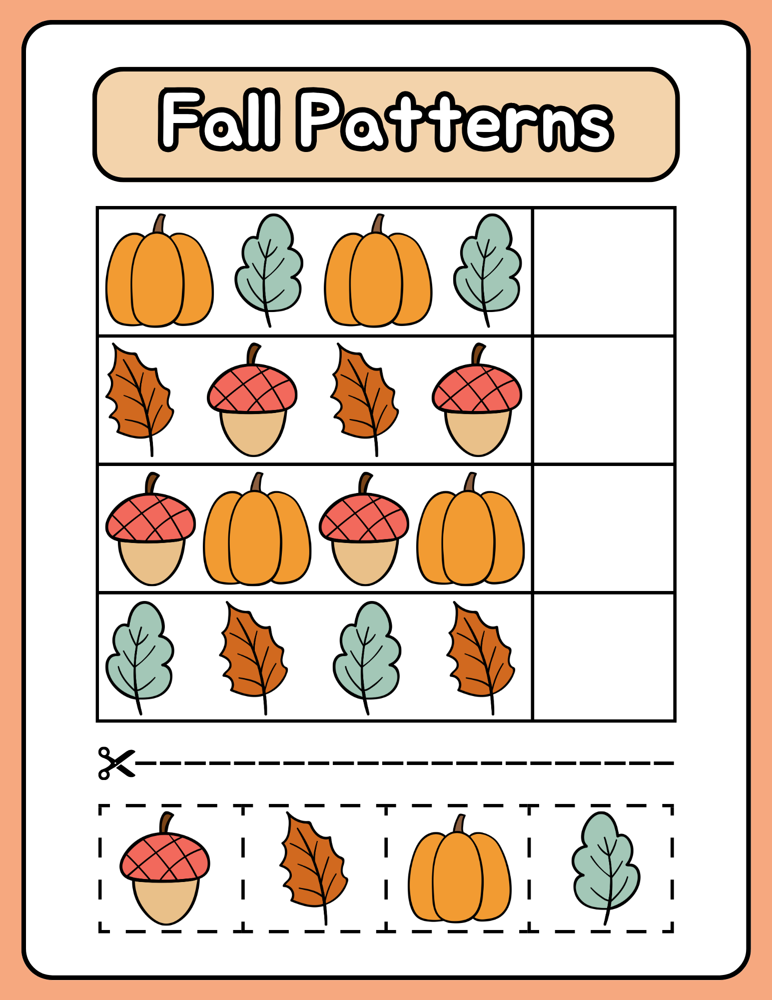

Grace Dittman
Block 2 Math
Block 3 Math
ESS
Lesson Plans
Résumé
Photos
Search
Home
›
Block 2 Math
›
Week 12
›
Activities
›
November Literacy Groups
›
Fall Math Station
›
Fall Patterns
Fall Patterns
FinishPatternFall.png
← Fall I Spy
Thanksgiving Jigsaw Puzzle →
Open full size

← Fall I Spy
Thanksgiving Jigsaw Puzzle →